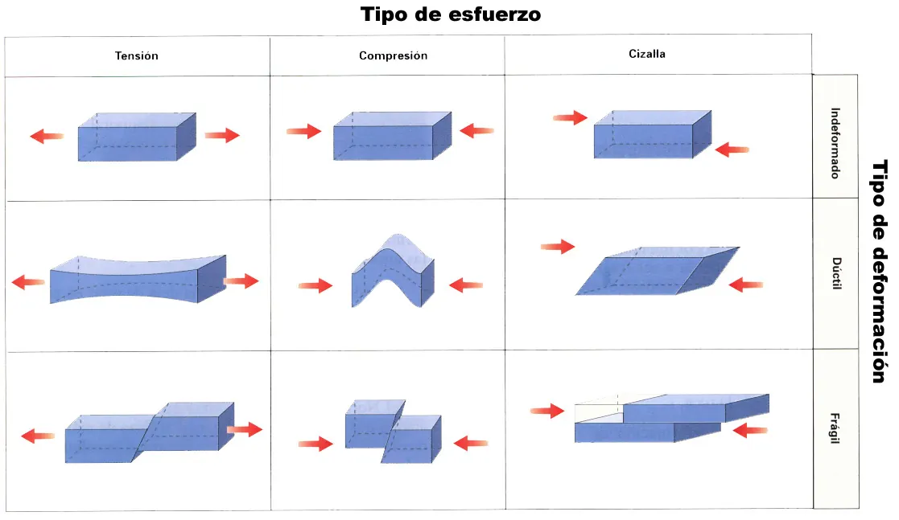
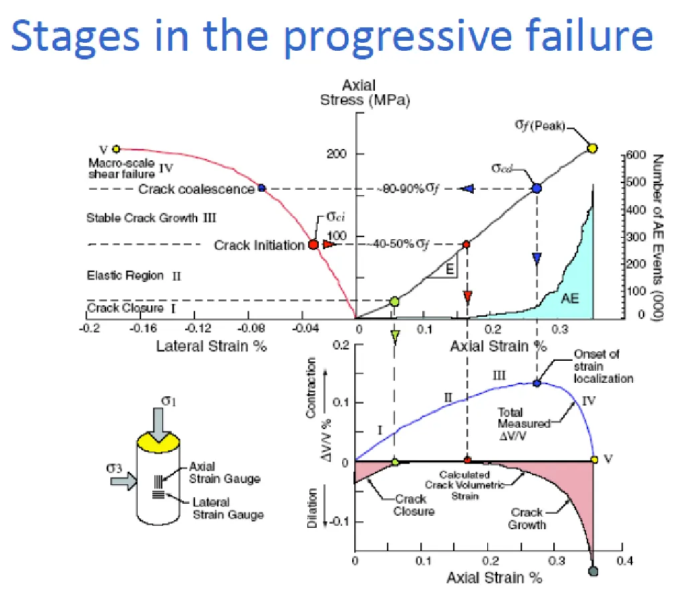
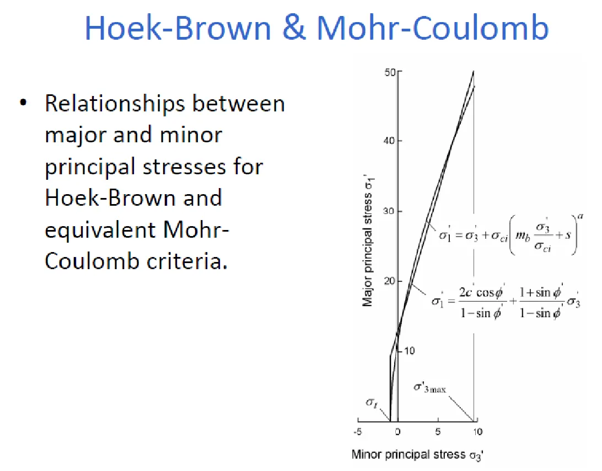

Resistencia de las rocas y de los macizos rocosos#
Importante
Objetivos de aprendizaje
Diferenciar la resistencia de la roca intacta, de las discontinuidades y del macizo rocoso.
Reconocer los factores que influyen en la resistencia de la roca intacta.
Aplicar los criterios de Mohr-Coulomb y de Hoek-Brown, y conocer sus limitaciones.
Estimar la resistencia al corte de discontinuidades con el criterio de Barton-Bandis.
Tres escalas de resistencia#
La resistencia es la capacidad de un material para soportar una carga sin fallar, y en las rocas puede expresarse en compresión, tensión, cizalla o torsión. Pero en la mecánica de rocas hay que precisar siempre a qué escala se refiere. La roca intacta tiene la resistencia más alta, que se mide en laboratorio sobre probetas sin fracturas. Las discontinuidades tienen una resistencia al corte mucho menor y una resistencia a la tracción prácticamente nula. El macizo rocoso tiene una resistencia intermedia, que depende de la combinación de ambas y del tamaño de los bloques respecto al tamaño de la obra. La resistencia de la roca no es la resistencia del macizo.


Figura 51 Tipos de esfuerzo que puede soportar una roca: compresión, tensión y cizalla.#
Este efecto de escala es fundamental. En un talud de pocos metros en un macizo con bloques métricos, la estabilidad depende de las discontinuidades individuales. En un talud de cientos de metros en el mismo macizo, o en un macizo intensamente fracturado, el conjunto se comporta como un material continuo equivalente, de resistencia reducida, y puede fallar a lo largo de superficies curvas que cortan bloques y discontinuidades.
Resistencia de la roca intacta#
Movilización de la cohesión y la fricción#
En la roca intacta la resistencia proviene de los enlaces entre cristales y granos, que se comportan como cohesión, y de la fricción una vez formadas las microfracturas. Ambas no se movilizan al mismo tiempo: la cohesión se pierde con deformaciones pequeñas, mientras que la fricción se moviliza progresivamente a medida que las fracturas se forman y deslizan. Esta secuencia explica la falla progresiva: la roca desarrolla microfracturas que crecen, se coalescen y forman una superficie de falla, y la resistencia cae del valor pico a un valor residual controlado por la fricción.


Figura 52 Etapas en la falla progresiva de la roca.#
Factores que influyen en la resistencia#
El confinamiento aumenta tanto la resistencia pico como la residual; además, la roca cambia de comportamiento frágil a dúctil al aumentar la presión de confinamiento, con una transición aproximada cuando \(\sigma_1/\sigma_3\approx3{,}4\). La presión de poros reduce la resistencia según el principio de esfuerzo efectivo, igual que en los suelos, aunque en rocas de baja porosidad su efecto depende de la conectividad de los poros. La forma de la muestra también influye: Hudson y otros (1971) encontraron que, aunque el módulo elástico no cambia, la resistencia y la ductilidad aumentan cuando disminuye la relación entre la longitud y el diámetro de la probeta. La humedad reduce la resistencia, sobre todo en rocas arcillosas como las lutitas, que pueden perder más de la mitad de su resistencia al saturarse; en rocas de baja porosidad el efecto es pequeño. El efecto de escala hace que la resistencia disminuya al aumentar el tamaño de la muestra, porque es más probable que una muestra grande contenga defectos. Finalmente, el aumento de la temperatura reduce el módulo elástico y la resistencia a la compresión y aumenta la ductilidad después del pico.
Los ensayos básicos son la compresión uniaxial, que da la resistencia \(\sigma_{ci}\); la compresión triaxial; la tracción indirecta o ensayo brasileño; y el ensayo de carga puntual, que se puede hacer en campo sobre fragmentos irregulares y se correlaciona con \(\sigma_{ci}\).
Criterios de falla#
Griffith#
Griffith (1921) explicó la falla frágil por la propagación de microfisuras preexistentes, en cuyos extremos se concentran los esfuerzos de tracción. Su teoría predice que la resistencia a la compresión uniaxial es unas ocho veces la resistencia a la tracción. Es conceptualmente importante, pero sobrestima el efecto del confinamiento porque no considera el cierre de las fisuras y la fricción entre sus caras.
Mohr-Coulomb#
El criterio lineal de Mohr-Coulomb, estudiado en el capítulo Resistencia al cortante de los suelos, se aplica también a las rocas:
Su limitación es que la envolvente real de las rocas es curva: el ángulo de fricción aparente disminuye al aumentar el esfuerzo normal. Además, predice una resistencia a la tracción mayor que la observada.
Hoek-Brown#
Hoek and Brown [1980] propusieron un criterio empírico no lineal, ajustando curvas a numerosos datos de laboratorio. Para la roca intacta:
donde \(m_i\) es una constante que depende de la litología y de la textura de la roca: valores bajos (4 a 10) en rocas de grano fino como las lutitas y las calizas micríticas, y altos (25 a 33) en rocas cristalinas de grano grueso como los granitos y las dioritas. Posteriormente el criterio se extendió al macizo rocoso, reduciendo los parámetros en función del GSI [Hoek et al., 2002]:
El factor \(D\) representa el grado de perturbación del macizo por voladuras y relajación de esfuerzos; varía entre 0 para macizos no perturbados y 1 para taludes de minería a cielo abierto excavados con voladuras intensas. Para la roca intacta, \(s=1\) y \(a=0{,}5\). La resistencia a la compresión uniaxial del macizo es \(\sigma_{cm}=\sigma_{ci}\,s^a\), y la resistencia a la tracción, \(\sigma_t\approx-s\,\sigma_{ci}/m_b\).


Figura 53 Comparación entre las envolventes de Hoek-Brown y de Mohr-Coulomb.#
El criterio de Hoek-Brown es válido para macizos que se comportan de manera aproximadamente isotrópica: rocas intactas o macizos con muchas familias de discontinuidades. No debe aplicarse cuando la estabilidad está controlada por una o dos familias de discontinuidades o por una estructura individual. En ese caso se debe analizar la resistencia de las discontinuidades.
Ejemplo resuelto: resistencia de un macizo granítico (Hoek-Brown)
El macizo granítico del capítulo Mecánica de rocas: el macizo rocoso y su clasificación tiene \(\sigma_{ci}=80\) MPa, \(m_i=32\) y \(GSI=55\), sin perturbación por voladuras (\(D=0\)). Calcule los parámetros del macizo y su resistencia.
\(m_b=32\exp(-45/28)=6{,}42\); \(s=\exp(-45/9)=0{,}0067\); \(a=0{,}5+(e^{-3{,}67}-e^{-6{,}67})/6=0{,}504\).
Resistencia a la compresión uniaxial del macizo: \(\sigma_{cm}=80\times0{,}0067^{0{,}504}=6{,}4\) MPa, apenas el 8 % de la resistencia de la roca intacta.
Resistencia a la tracción: \(\sigma_t\approx-0{,}0067\times80/6{,}42=-0{,}08\) MPa.
Resistencia con confinamiento: para \(\sigma_3=1\), 2 y 5 MPa, \(\sigma_1=24{,}4\), 34,5 y 55,9 MPa. El confinamiento aumenta rápidamente la resistencia, lo que explica por qué los problemas de estabilidad se concentran cerca de la superficie, donde el confinamiento es bajo.
Resistencia al corte de las discontinuidades#
Para una discontinuidad lisa y plana, la resistencia es puramente friccional: \(\tau=\sigma_n\tan\phi_b\), donde \(\phi_b\) es el ángulo de fricción básico, entre 25° y 35° para la mayoría de las rocas. Las discontinuidades naturales son rugosas, y las asperezas aumentan la resistencia de dos maneras: obligan a la discontinuidad a dilatarse al deslizar, como propuso Patton con su modelo de dientes de sierra, \(\tau=\sigma_n\tan(\phi_b+i)\); y, bajo esfuerzos altos, las asperezas se rompen.
Barton and Choubey [1977] propusieron un criterio empírico que combina ambos efectos:
donde \(\phi_r\) es el ángulo de fricción residual, \(JRC\) el coeficiente de rugosidad (0 para superficies lisas a 20 para muy rugosas) y \(JCS\) la resistencia a la compresión de las paredes, que se estima con el martillo de Schmidt. A esfuerzos normales bajos, como en los taludes, el término de rugosidad es muy importante; a esfuerzos altos su efecto disminuye. Si la discontinuidad tiene un relleno arcilloso más grueso que la amplitud de las asperezas, su resistencia es la del relleno.
Ejemplo resuelto: resistencia de una diaclasa (Barton-Bandis)
Una diaclasa en el granito tiene \(JRC=10\), \(JCS=60\) MPa y \(\phi_r=28°\). Calcule la resistencia al corte bajo un esfuerzo normal de 0,5 MPa, equivalente a unos 20 m de roca.
\(\phi_r+JRC\log_{10}(JCS/\sigma_n)=28°+10\log_{10}(120)=28°+20{,}8°=48{,}8°\).
\(\tau=0{,}5\tan48{,}8°=0{,}57\) MPa. El ángulo de fricción efectivo de la diaclasa, 48,8°, es mucho mayor que el residual gracias a la rugosidad. Sin embargo, esta contribución se pierde si la discontinuidad ya ha deslizado o si sus paredes están meteorizadas.
Lecturas recomendadas#
Ejercicios#
Calcule \(\sigma_{cm}\) para una lutita con \(\sigma_{ci}=25\) MPa, \(m_i=6\) y \(GSI=35\), con \(D=0\) y con \(D=0{,}7\). ¿Qué indica la diferencia sobre el efecto de las voladuras?
¿Por qué el criterio de Hoek-Brown no es adecuado para analizar un talud en una arenisca con estratificación que buza hacia la cara del talud?
Calcule la resistencia de una diaclasa con \(JRC=6\), \(JCS=40\) MPa y \(\phi_r=26°\) para esfuerzos normales de 0,1, 1 y 5 MPa, y discuta la variación del ángulo de fricción aparente.